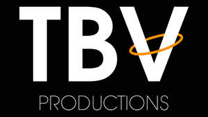

Trade Mark Journal No.2025/040 3 October 2025
UK00004267020 19 September 2025 (41)

- Class 41
- Video production; Video film production; Production of video recordings; Production of video films; Video tape production; Production of video cassettes; Production of videos; Audio and video production, and photography; Video production services; Video tape film production; Production of pre-recorded video films; Video and DVD film production; Production of video and audio recordings; Production of video tapes and video discs; Audio, video and multimedia production, and photography; Audio production; Production of sound and video recordings; Film and video tape film production; Production of entertainment in the form of video tapes; Production of musical videos; Videotape production; Audio recording and production; Production (Videotape film -); Videotape film production; Production of educational sound and video recordings; Production of animation; Production of training videos; Film production; Production of video discs for others; Production of video and/or sound recordings; Services for the production of entertainment in the form of video; Operation of video and audio equipment for the production of radio and television programs; Audio, film, video and television recording services; Recording, film, video and television studio services; Production of music; Music production; Production of audio entertainment; Audio recording and production services; Production of audio recordings; Production of audio programs; Television production; Audio production services; Production of documentaries; Audio tape production services; Film production services; Production of audiovisual recordings; Production of audio-visual recordings; Production of music shows; Video recording services; Audio and video recording services; Animation production services; Video editing; Production of television game shows; Production of podcasts; Providing age ratings for television, movie, music, video and video game content; Production of animated cine-film clips; Production of shows; Shows (Production of -); Production of video tapes for corporate use in management educational training; Production of television features; Production of films; Production of graphical cine-film clips; Audio and video editing services; Production of theatrical shows; Editing of video recordings; Motion picture film production; Production of film studies; Post-production editing services in the field of music, videos and film; Providing audio or video studios; Production of audio tapes for entertainment purposes; Production of musical works in a recording studio; Providing audio or video studio services; Exhibition of video film sound tracks; Consultancy on film and music production; Television show production; Production of pre-recorded cinema films; Television program production; Music production services; Theater production; Production of training films; Motion picture song production; Video tape editing; Provision of video recording studio services; Shows and films production; Production of television films; Special effects animation services for film and video; Production of audio master recordings; Television, radio and film production; Sound recording and video entertainment services; Services in the production of animated motion picture entertainment; Provision of video recording studio facilities; Rental of video films; Show production services; Film production for entertainment purposes; Production of video tapes for corporate use in corporate educational training; Services in the production of animated motion pictures and television features; Video game services; Rental of video recordings; Film production, other than advertising films; Theatrical production services; Production of animated motion pictures; Studio services for the recording of videos; Recording studio services for videos; Video taping; Production of musical recordings; Production of motion picture films; Services for the production of entertainment in the form of film; Theatre production; Rental of sound and video recording apparatus; Video and audio rental services; Production of motion pictures; Rental of video games; Rental of video cameras; Video cameras (Rental of -); Services for the showing of video recordings; Rental of video tapes; Rental of video tapes and motion pictures; Exhibition of video films; Video arcade services; Hire of video recordings; Video cassette rental; Rental of video game apparatus; Rental of video cassettes; Video cassettes (Rental of -); Rental of video screens; Rental of video recorders; Video recorders (Rental of -); Video game arcade services; Recording of music; Music recording; Entertainment services for sharing audio and video recordings; Music publishing and music recording services; Rental of sound and video recordings; Presentation of music concerts; Production of sound and music recordings; Entertainment services for matching users with audio and video recordings; Music recording studio services; Digital video, audio and multimedia entertainment publishing services; Video game entertainment services; Instruction in music; Music instruction; Performance of music; Music performances; Music concerts; Production of music concerts; Video entertainment services; Music concert services; Performance of music and singing; Live music shows; Rental of pre-recorded films in the form of video tapes; Rental of audio tapes bearing recorded music; Entertainment services in the nature of video games; Photography; Portrait photography; Aerial photography; Portrait photography services; Photography services; Photography instruction; Macro photography services; Film editing (Photographic -); Aerial photography via drones; Photographer services; Education services relating to photography; Photographic imaging services by drone; Aerial videography services; Photo editing.
TBV Productions Ltd